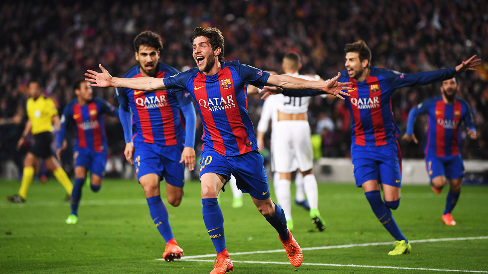

¡Histórica remontada! Barça vence 6-1 al PSG y avanza a semifinales
En una noche mágica en el Camp Nou, el FC Barcelona logró una de las mayores remontadas en la historia de la Champions League tras perder 4-0 en la ida. Goles de Messi (2), Neymar, Suárez, Rakitić y el mítico de Sergi Roberto en el minuto 95.